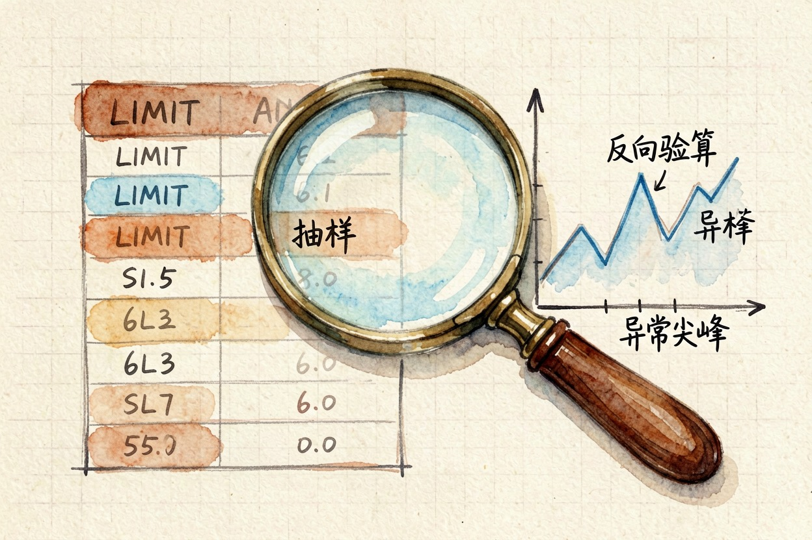

用 AI 写 SQL？不会代码也能查出想要的数 — Learntide
对着数据库不知道怎么写查询的时候，最省时间的办法是先把想要的结果用大白话讲给模型听。
ai写sql：先把想要的结果说清楚
ai写sql，不会写代码也能从数据库里把数取出来。关键不是让模型替你想业务逻辑，而是你把想要的结果讲清楚，它负责翻成查询语句。
先想明白三件事。要查哪张表、按什么条件过滤、最后要什么形式的汇总。这三样讲不清，模型只能瞎猜，跑出来的 SQL 多半不能用。
新手最容易踩的坑，是直接说「帮我查一下销售」。销售哪张表、哪个时间段、要不要分组，全没说。模型只能编一个，结果自然不对。
把跑通的 SQL 存成模板。下次类似需求改个条件就能用，不用每次从零描述。
给模型的自然语言怎么写
把需求写成「主语 + 条件 + 动作」。比如「从订单表取上月、状态为已付款、按城市分组算总额」。这种写法模型几乎一次就能翻对。
能加字段名就别用口语。你说「花钱多的客户」，模型不知道对应哪个列。你写「金额大于平均值的客户」，它才好接。
给一点样本数据也有用。贴两行真实表头和一行示例，模型能猜出字段类型，少犯类型错。
一句话里只讲一件事。又过滤又分组又排序，模型容易丢一半。拆成两句，它反而翻得准。
一条可直接复制的取数提示词

把下面这段发给模型，替换括号里的内容：
你是一名 SQL 助手。请基于我的数据库 schema 写查询：
表 orders：id, city, amount, status, pay_time
需求：取 2026 年 7 月、status='paid' 的订单，按 city 分组，算每城总额与笔数，按总额降序。
要求：
1 只输出 SQL，不要解释
2 字段用反引号包裹，兼容 MySQL 语法
3 时间用 pay_time BETWEEN '2026-07-01' AND '2026-07-31'
4 总额用 ROUND 保留两位小数跑出来先看一眼结构。确认 FROM 的表名、WHERE 的条件和你讲的一致，再拿去执行。
要是结果字段名带空格，提醒它用方括号包住列名。否则 SQL 会在空格处断句报错。
结果对不对的几个检查
第一招是 LIMIT 先看几行。先别跑全量，加一句 LIMIT 20，肉眼确认字段和数值像不像那么回事。
第二招是反向验算。你心算一个小总数，和模型结果对一下。对不上就让它解释每一步怎么算的。
第三招最稳：把 SQL 贴回模型，让它用大白话翻译回来。翻译和你的原意差得远，说明语句本身就有歧义。
把结果导出再画个图。图里明显反常的尖峰，往往是某步算错了的信号，比盯数字快。复杂查询先算小样本。取一天的数据验证逻辑，再放全量，出错范围小好定位。
常见报错与收尾提醒
报错先看前几个字。报 unknown column，多半是字段名拼错或表不对。报 syntax error，通常是少了逗号或引号没闭合。
数字类型也常坑人。金额存成字符串时比较会失灵，提醒模型先 CAST 成数值再算。报错 access denied 多半是账号没那张表的读权限，去找库管开。
也别迷信一次跑通。复杂查询拆成两步，先取明细再汇总，比一句写死更稳。
最后一步最该做：结果出来先手算抽查，再决定能不能直接交。别把 ai写sql 当成免检通道，数错了背锅的是你。
本文信息核对于 2026-08-08。AI 产品的价格、免费额度与功能变动频繁，实际以各工具官网当前说明为准。